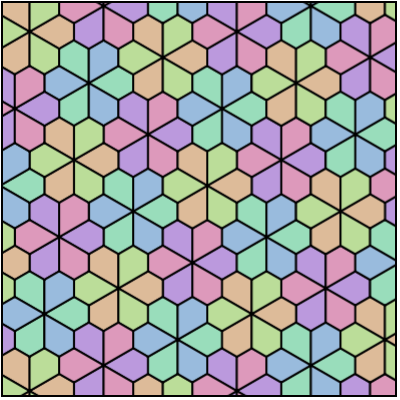
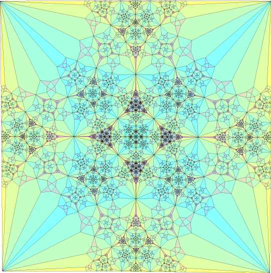
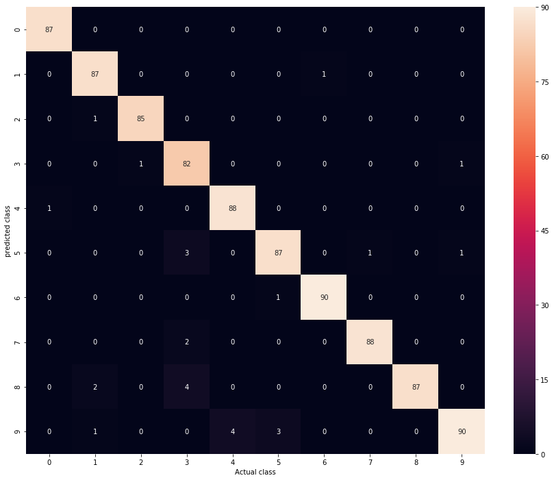
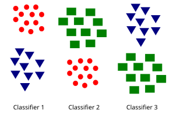
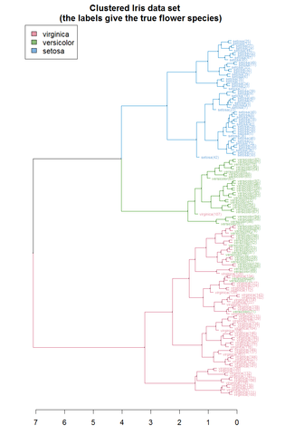
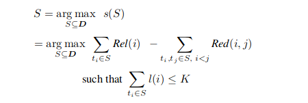
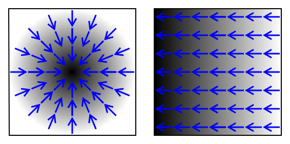
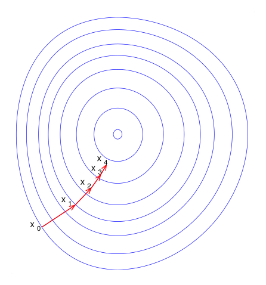
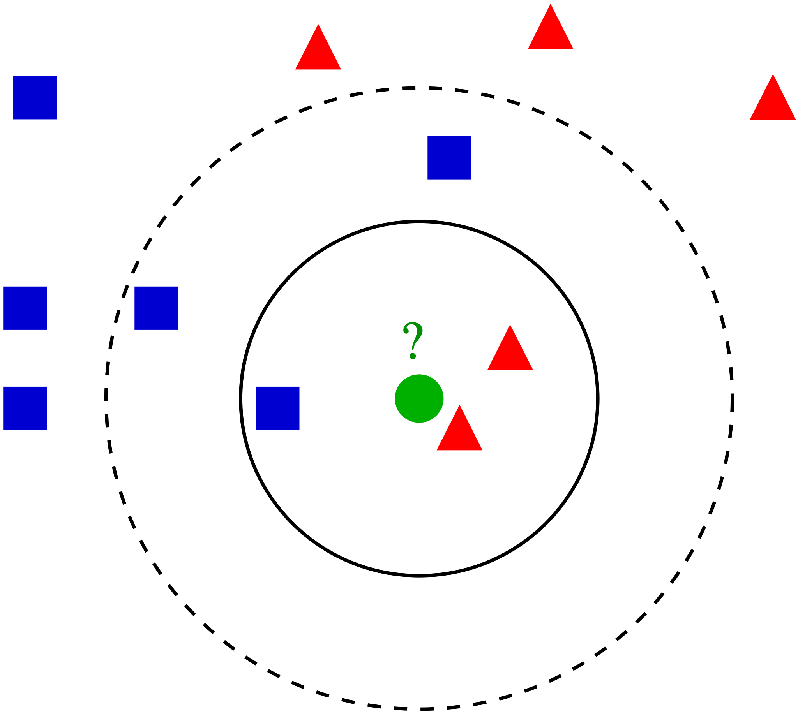

Data Science
John Samuel
CPE Lyon
Year: 2025-2026
Email: john.samuel@cpe.fr

John Samuel
CPE Lyon
Year: 2025-2026
Email: john.samuel@cpe.fr


.jpg)



Feature construction is an essential step in the data preprocessing pipeline in machine learning, as it can help make data more informative for learning algorithms.
This formalization is at the core of supervised learning, where the objective is to learn from labeled examples and find a function that can accurately predict labels for new unseen data.
Unsupervised learning is used to explore and discover patterns, structures or features inherent in data, without the use of prior labels. It is commonly used in areas such as clustering, principal component analysis (PCA), independent component analysis (ICA), and many others.

In the context of machine learning classification, evaluating a model's performance involves understanding the different types of predictions it can make relative to reality. True positives (TP) and true negatives (TN) are two of these elements.


Let
Precision measures the proportion of positive predictions made by the model that were actually correct, while recall measures the proportion of actual positive examples that were correctly identified by the model. So:
The F1-score is the harmonic mean of precision and recall. It provides an overall measure of a classification model's performance, taking both precision and recall into account. It is particularly useful when classes are imbalanced.
The F1-score accounts for both Type I errors (false positives) and Type II errors (false negatives), thus providing a balanced measure of model performance.
The \(F_2\)-score is often used in domains where recall is considered more critical than precision.
The confusion matrix is an essential tool for evaluating the performance of a classification system. It provides a detailed view of the predictions made by the model relative to the actual classes.




Making decisions means applying all classifiers to an unseen sample x and predicting the label k for which the corresponding classifier reports the highest confidence score: \[\hat{y} = \underset{k \in \{1 \ldots K\}}{\arg\!\max}\; f_k(x)\]


\[ C_1.. ∪ ..C_k ∪ C_{outliers} = X \] and
\[ C_i ∩ C_j = ϕ, i ≠ j; 1 <i,j <k \]
\(C_{outliers}\) may consist of extreme cases (data anomalies)



Linear regression is a mathematical model that represents a linear relationship between an independent variable \(x_i\) and a dependent variable \(y_i\). The model takes the form of a straight line (for simple linear regression) or a parabola (for multiple linear regression).
Straight line: \(y_i = β_0 + β_1x_i + ε_i\) where \(β_0\) and \(β_1\) are the regression coefficients, \(x_i\) is the independent variable, and \(ε_i\) is the residual error.
To minimize the error:
The objective is to minimize SSE to obtain the best approximation of the linear relationship between variables.
Process of assigning a class or label to each element of a sequence of values or tokens. Example: Named Entity Recognition (NER) with spaCy, where entities such as person names, locations, or organizations are identified and labeled in a text.
| Tag | Meaning |
|---|---|
| GPE | Countries, cities, states. |
| DATE | Absolute or relative dates or periods |
| CARDINAL | Numerals that do not fall under another type. |
Association rules are a set of data analysis techniques aimed at discovering relationships and associations between variables in a dataset. This method searches for correlations and co-occurrences between items, allowing for the identification of significant patterns or models.
A common example of association rules application is market basket analysis in retail, where these rules are used to identify purchasing patterns, such as combinations of products often bought together.
Let us take a concrete example with a data table representing grocery transactions:
| Transaction | Purchased products |
|---|---|
| 1 | Bread, Milk, Eggs |
| 2 | Bread, Butter |
| 3 | Milk, Eggs, Cheese |
| 4 | Bread, Milk, Eggs, Beer |
| 5 | Milk, Beer, Chips |
In this table, each column represents a product and each row represents a transaction. A "1" indicates that the product was purchased during this transaction, while a "0" indicates that the product was not purchased.
| Transaction | Bread | Milk | Eggs | Butter | Cheese | Beer | Chips |
|---|---|---|---|---|---|---|---|
| 1 | 1 | 1 | 1 | 0 | 0 | 0 | 0 |
| 2 | 1 | 0 | 0 | 1 | 0 | 0 | 0 |
| 3 | 0 | 1 | 1 | 0 | 1 | 0 | 0 |
| 4 | 1 | 1 | 1 | 0 | 0 | 1 | 0 |
| 5 | 0 | 1 | 0 | 0 | 0 | 1 | 1 |
An association rule \(X ⇒ Y\) is valid if the support and confidence of the rule exceed the specified thresholds. This means that \(X\) and \(Y\) appear frequently together in transactions, and that when \(X\) is present, \(Y\) is also often present.
The support of an itemset in the context of association rules is defined as the frequency with which this itemset appears in the database. In other words, it is the number of transactions in which this itemset is present, divided by the total number of transactions in the database. Support measures the popularity or prevalence of an itemset. It is used to evaluate how strong an association between two itemsets is. A high support value indicates that the association is frequent in the database, making it potentially more significant.
\[supp(X) = \frac{|t ∈T; X ⊆ t|}{ |T|}\]
Confidence in the context of association rules represents the frequency with which the rule has been found to be true in the database. More specifically, it measures the conditional probability that the consequent Y occurs in a transaction, given that the antecedent X is also present in that transaction.
The confidence of a rule is calculated by dividing the number of transactions in which both X and Y are present by the number of transactions in which X is present. Thus, high confidence indicates that the consequent Y is often true when the antecedent X is present, which strengthens the reliability of the association rule.
\[conf(X ⇒ Y) = \frac{supp(X ∪ Y)}{supp(X)}\]
Using association rules, we can extract significant relationships between products. For example, by applying a minimum support of 40% and a confidence threshold of 60%, we can identify the following association rules:
This means that in 40% of transactions, customers bought bread and milk together, and in 100% of those transactions, they also bought eggs. Similarly, in 60% of transactions, customers bought milk, and in 75% of those transactions, they also bought eggs.
Lift in the context of association rules is the ratio between the observed "support" of the rule and the expected support if itemsets X and Y were independent. Formally, lift is calculated by dividing the support of the rule by the product of the individual supports of X and Y. In other words, it measures how much more frequently the rule is observed than would be expected if events X and Y were independent.
A lift greater than 1 indicates that the rule has a positive association between X and Y (i.e., items X and Y appear together more frequently than expected by chance), while a lift less than 1 indicates a negative or non-significant association. A lift of 1 indicates independence between items X and Y.
Anomaly detection, also known as outlier detection, involves identifying unusual or divergent data in a dataset. Here are some common approaches to detecting anomalies:
Unexpected spikes: Anomalies can manifest as unexpected spikes or bursts in data. For example, a sudden increase in web traffic may indicate a denial of service (DDoS) attack in the case of network traffic monitoring, or an abnormal increase in financial transactions may signal fraud.
The characteristics of data vary depending on the application domain and the specific types of anomalies sought. Identifying unusual patterns or aberrant behaviors in data can help detect anomalies and take appropriate measures to manage them.

Find a subset from the overall subset.
The Support Vector Machine (SVM) is a supervised learning method. SVM seeks to find the best decision boundary that optimizes class separation, allowing accurate classification even in complex data spaces.

The hyperplane in n-dimensional space is an (n-1)-dimensional subspace that separates the data into two classes.


Stochastic Gradient Descent is an optimization technique used to minimize an objective function that can be expressed as a sum of differentiable functions.
The gradient is a multi-variable generalization of the notion of derivative.

| Derivative | Gradient | |
|---|---|---|
| Definition | Instantaneous rate of change of a function | Vector of partial derivatives of a function of several variables |
| Number of variables | Single | Multiple |
| Nature | Scalar function | Vector function |
| Representation | A single real number | A vector of real numbers |
| Usage | Functions of a single variable | Functions of several variables, especially in optimization and machine learning |
| Geometry | Slope of the tangent at a point on a curve | Direction and fastest rate of change of a function in multi-dimensional space |
The stochastic gradient descent algorithm is an iterative optimization algorithm widely used to find the minimum of a function.

The stochastic gradient descent algorithm is a variant where the gradient is computed stochastically, that is, instead of using the complete dataset to compute the gradient at each iteration, a random subset or a single observation is used. This allows for greater efficiency, especially for large datasets.
The main objective of this algorithm is to minimize an objective function, often a loss function in the context of machine learning, and it is widely used in fields such as convex optimization, machine learning, and signal processing.
The k-nearest neighbors (kNN) method and k-means clustering are two important techniques in machine learning and data mining:

The "means", also called centroids, are the initial points around which the clusters will be formed. In this step, k points are selected randomly from the dataset to serve as initial means.

In the second step of the k-means clustering algorithm, also known as the assignment step, the k clusters are created by associating each observation with the nearest mean. The partitions here represent the Voronoi diagram generated by the means.

The centroids of each of the k clusters are recalculated to become the new means.

The fourth step of the k-means clustering algorithm consists of repeating steps 2 and 3 until convergence is reached.
The k-nearest neighbors (k-NN) method is a supervised learning algorithm used for both classification and regression.
Suppose we have a training dataset consisting of points in a two-dimensional space, where each point is associated with a class. Suppose we want to classify a new point with coordinates (x = 4, y = 3).
| Point | x coordinate | y coordinate | Class |
|---|---|---|---|
| A | 2 | 3 | Red |
| B | 4 | 4 | Red |
| C | 3 | 2 | Blue |
| D | 6 | 5 | Red |
| E | 5 | 3 | Blue |
Naive Bayes classification is a simple probabilistic classification method based on the application of Bayes' theorem with a strong independence assumption between features.
\[P(A|B) = \frac{(P(B|A).P(A))}{P(B)}\]
\[P(S|W) = \frac{P(W|S) \cdot P(S)}{P(W|S) \cdot P(S) + P(W|H) \cdot P(H)}\]
Decision trees are a powerful decision support tool that uses a tree model to represent decisions and their possible consequences.

| Animal | Coat | Feathers | Can fly | Class |
|---|---|---|---|---|
| Dog | Furry | No | No | Mammal |
| Cat | Furry | No | No | Mammal |
| Eagle | Feathery | Yes | Yes | Bird |
| Penguin | Feathery | Yes | No | Bird |
| Snake | Scaly | No | No | Reptile |
We want to classify these animals into three classes: Mammal, Bird, or Reptile. Let us use a decision tree to do so.
The decision tree algorithm is a supervised learning method used for classification and regression.
In the context of decision trees, data is generally represented as vectors where each element of the vector corresponds to a feature or independent variable, and the dependent variable is the target that one seeks to predict or classify.
Ensemble learning, in particular random forests, is a technique that combines multiple learning models to improve predictive performance compared to a single model. Random forests are obtained by building multiple decision trees during the training phase.
Feature selection is a process aimed at choosing a subset of relevant features from a large number of available features.
Applying machine learning to scientific problems follows a structured workflow that guides the practitioner from raw data to a deployable model.
Translating a scientific question into a well-defined ML problem is a critical first step. The choice of problem type determines which algorithms, metrics, and evaluation strategies are appropriate.
Proper data partitioning is essential to obtain unbiased estimates of model performance and to avoid overfitting.
Cross-validation is a resampling technique used to evaluate a model's generalization performance when the dataset is too small for a separate validation set.
Raw data rarely satisfies the assumptions of ML algorithms. Data preparation transforms the raw feature matrix into a form suitable for learning.
Clustering groups unlabeled observations so that objects in the same cluster are more similar to each other than to those in other clusters.
DBSCAN (Density-Based Spatial Clustering of Applications with Noise) discovers clusters of arbitrary shape based on local density.
Anomaly detection algorithms identify rare observations that differ significantly from the majority of the data.
Isolation Forest is an ensemble-based anomaly detector that exploits the fact that anomalies are few and different, making them easier to isolate.
| Algorithm | Type | Strengths | Limitations |
|---|---|---|---|
| One-Class SVM | Kernel-based | Handles non-linear boundaries; effective in high dimensions | Slow on large datasets; sensitive to hyperparameters |
| Isolation Forest | Ensemble tree | Fast; scalable; no distance metric needed | Less effective for locally anomalous points |
Applications: intrusion detection, fraud detection, industrial fault detection, medical diagnosis, and environmental monitoring.
This section introduced advanced topics in the data science and machine learning workflow.